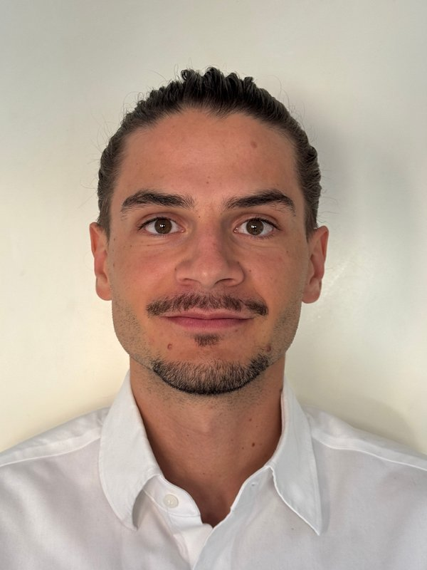

Soy ingeniero de caminos y me dedico a poner en orden información con código e inteligencia artificial. Vengo de los proyectos donde eso se aprende por las malas: seis años dirigiendo modelos, datos y automatización en grandes obras internacionales, donde un dato mal puesto cuesta millones.
Hoy trabajo desde Segovia, para España y en remoto, con dos frentes que se alimentan entre sí. Construyo ONTOS, un gemelo digital personal y empresarial que una IA mantiene al día, y hago ingeniería de la información por encargo, automatización, datos y BIM.
De dónde vengo
Los seis años anteriores a ONTOS los pasé en proyectos donde el volumen de información supera a cualquier persona, y la única salida es construir sistemas que la ordenen sola.
- Sydney Metro West (Australia)Modelado y automatización en la obra del metro de Sídney, con 41 cross passages resueltos con modelos generados por código.
- HS2 (Reino Unido)Modelos, datos y coordinación de información en la nueva línea de alta velocidad británica.
- Northern Water (Adelaida, Australia)Infraestructura de agua de 140 ML/día, con el dato como columna del proyecto.
- NEOM (Arabia Saudí)Automatización y gestión de información en uno de los mayores desarrollos de infraestructura del mundo.
Ese trabajo fue premiado por I+D en automatización e IA, y parte está publicado.
Publicación
«Automation of tunnel modelling for enhanced project efficiency», 19th Australasian Tunnelling Conference (ATC 2025).
Qué hago ahora
Casi nadie tiene un problema de información: tiene un problema de orden. A eso me dedico, desde dos frentes.
- ONTOS, el productoUn gemelo digital de tu vida o de tu negocio: un modelo ordenado de lo que tienes, haces y sabes, mantenido al día por una IA y ejecutado en tu máquina. Está funcionando y se puede ver. En piloto privado.
- ConsultoríaMe cuentas qué os come horas y os monto la solución: automatización e IA a medida, datos del mundo físico con dron y fotogrametría, lectura de contratos, webs. La línea más pedida es la gestión de requisitos BIM en licitación pública.
- EscritosDe vez en cuando escribo sobre lo que veo en el sector, como qué exige el Plan BIM a una ingeniería mediana en 2026.